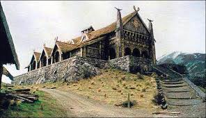
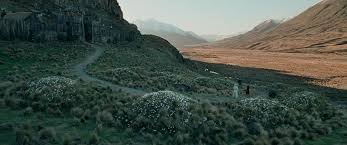

Gondolin était une cité elfique cachée, située approximativement au centre du Beleriand, en Terre du Milieu.
Elle fut fondée par Turgon le Sage, un roi Ñoldorin, à la fin du Premier Âge.
De tous les royaumes Ñoldorins en exil, elle connut la plus longue existence, durant près de quatre siècles, au cours des Années du Soleil.
Son peuple était les Gondolindrim.
Pour en lire plus, accédez ici.
| Mini-destinations | Photos | Description |
|---|---|---|
| Palais de Edoras |  |
Ici vit Éomer, neveu de Theoden, roi de Rohan. |
| Tombeaux de Edoras |  |
Les rois et leurs familles sont enterrés ici, dans les tombeaux. Des fleurs Evermind y poussent. |